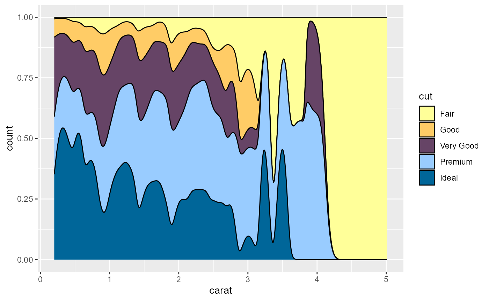

Making a static plot
This examples adds an LCARS-style border around a static plot. Keep in mind that while the lcars_border function below takes a ggplot object, the result is not a returnable ggplot object. The function uses the grid package underneath the hood and draws the necessary elements using viewports.
library(lcars)
library(trekcolors)
library(ggplot2)
library(grid)
library(png)
logo <- rasterGrob(readPNG(system.file("stlogo-white.png", package = "lcars")))
clrs <- c("#FF3030", "#FFFF33", "#20B2AA")
g <- ggplot(iris, aes(Sepal.Length, Sepal.Width, color = Species)) +
geom_point() +
theme_lcars_dark() +
coord_cartesian(clip = "off") +
annotation_custom(logo, xmin = 9.4, xmax = Inf, ymin = 3.6, ymax = Inf) +
scale_color_manual(values = clrs)
len_frac <- c(0.55, 0.25, 0.2, 0.4, 0.1, 0.2, 0.1, 0.1)
n_seg <- c(1, 2, 0, 8)
corner_colors <- c("chestnut-rose", "lilac", rep("pale-canary", 2))
side_colors <- list("pale-canary", c("anakiwa", "lilac"), NA,
c("#000000", rep("anakiwa", 2), rep("orange-peel", 5)))
side_labels <- list(
"R 47.0.2", c("47", "B4"), NA,
c("LCARS", "47174-A", "...", "O'Brien", "Lefler", "La Forge", "Barclay", "Argyle"))
lcars_border(g, corners = 1:3, length_frac = len_frac, side_n_segments = n_seg,
corner_color = corner_colors, side_color = side_colors,
side_label = side_labels, label_size = 0.7)
text(2.8, 0.1, "Iris dataset (classic Terran flora sample)",
col = lcars_colors("anakiwa"), font = 2, cex = 0.7)
text(7.55, 0.1, "LCARS BETA R Interface v0.0.1",
col = lcars_colors("pale-canary"), font = 2, cex = 0.7)
As you can see, a decent plot is still going to take some customization with additional commands in order to give it the level of polish it deserves.
But this is just the appetizer; next is the Shiny version.
LCARS in Shiny
In the lcars package, functions whose names are lowercase and contain underscores deal with general R use. Functions whose names use camel case are related to Shiny.
First, use lcarsPage to set up the Shiny UI. This is a wrapper around Shiny’s bootstrapPage. It loads the required CSS and other assets.
There are several functions you can explore. There are a handful of simple wrappers around various Shiny inputs that give them an LCARS aesthetic, but not many currently and they will continue to be improved upon in subsequent package versions.
The primary function of interest is lcarsBox. This is the container that captures the LCARS style. Additional functions worth focusing on include lcarsHeader for breaking up sections of the UI; also lcarsButton and lcarsToggle, which in conjunction with buttonColumn produce column inputs that fit well into the sidebars of an lcarsBox.
Here is a simple example.
if (interactive()) {
ui <- lcarsPage(
lcarsBox(
fluidRow(
column(3,
h4("Main panel area"),
HTML("<p>Some paragraph text and <a href='#'>a link</a>
with LCARS styling.</p>
<p>Use <code>lcarsPage</code>
to apply the LCARS theme and <code>lcarsBox</code>
to draw a characteristic box for framing content.</p>
<p>Many of the <code>lcarsBox</code>
properties are configurable.
See <code>lcars::lcarsApp(\"box\")</code> for a demo</p>")
),
column(9, plotOutput("plot1"))
),
title = "box title",
left_inputs = buttonColumn(lcarsButton("btn1", "A button"))
)
)
server <- function(input, output) {
output$plot1 <- renderPlot({
hist(rnorm(500))
})
}
shinyApp(ui, server)
}Demo apps
Rather than post lots of code here in a non-interactive package vignette, the best suggestion is to explore the example apps included in the package. The source code is easy to browse in the GitHub repository.
Use lcarsApp to loads various demo apps:
lcarsApp("demo")
lcarsApp("box")
lcarsApp("sweep")
lcarsApp("toggle")
lcarsApp("elements")
lcarsApp("leaflet")The box example is helpful for exploring the many ways you can control the style of an lcarsBox. Here are a couple examples highlighting some of the versatility:


Recommendations
Font and casing
Pay attention to the arguments to lcarsPage. Depending on the nature of text content in your app, you may find you need to deviate from some LCARS-style defaults (e.g., uppercase font) to make the text in your app more pleasant to read. It will also allow you to revert to sans serif. It is not an all or nothing switch; you have some control over what to change and what to leave alone.
Responsiveness limitations
In adhering closely to sizing and layout rules for LCARS UI design, fixed sizing works best for some container widgets like lcarBox and lcarsSweep. You can use settings like width = "100%" for these containers, but you may notice limitations in maintaining a responsive UI, particularly when they contain plot outputs. Fixed width widgets are generally recommended.
Visual components such as the LCARS elbow shape underlying some widgets are intended to follow strict sizing and scaling rules. They are not intended to scale arbitrarily or fit well on very small device screens.
Official LCARS colors
Familiarize yourself with LCARS colors from the trekcolors package. This package is a dependency of lcars. It includes various other Star Trek color palettes. Most notably it includes a function for previewing the palettes.
There are several generations of LCARS color palettes. The lcarsdata dataset in lcars provides a convenient data frame of the four main series of LCARS color palettes with official color names, but trekcolors offers several helpful functions related to LCARS colors, including LCARS-themed scale_* functions for use with ggplot2.
head(lcarsdata)
#> series name value
#> pale-canary 2357 pale-canary #FFFF99
#> tanoi 2357 tanoi #FFCC99
#> golden-tanoi 2357 golden-tanoi #FFCC66
#> neon-carrot 2357 neon-carrot #FF9933
#> eggplant 2357 eggplant #664466
#> lilac 2357 lilac #CC99CC
library(ggplot2)
library(trekcolors)
lcars_colors()
#> pale-canary tanoi golden-tanoi neon-carrot
#> "#FFFF99" "#FFCC99" "#FFCC66" "#FF9933"
#> eggplant lilac anakiwa mariner
#> "#664466" "#CC99CC" "#99CCFF" "#3366CC"
#> bahama-blue blue-bell melrose hopbush
#> "#006699" "#9999CC" "#9999FF" "#CC6699"
#> chestnut-rose orange-peel atomic-tangerine danub
#> "#CC6666" "#FF9966" "#FF9900" "#6688CC"
#> indigo lavender-purple cosmic red-damask
#> "#4455BB" "#9977AA" "#774466" "#DD6644"
#> medium-carmine bourbon sandy-brown periwinkle
#> "#AA5533" "#BB6622" "#EE9955" "#CCDDFF"
#> dodger-pale dodger-soft near-blue navy-blue
#> "#5599FF" "#3366FF" "#0011EE" "#000088"
#> husk rust tamarillo
#> "#BBAA55" "#BB4411" "#882211"
lcars_colors("melrose")
#> melrose
#> "#9999FF"
view_trek_pals(c("lcars_2357", "lcars_2369", "lcars_2375", "lcars_2379"))
ggplot(diamonds, aes(carat, stat(count), fill = cut)) +
geom_density(position = "fill") + scale_fill_lcars("2357")
Functions in lcars that accept color arguments will take any hex color, but will also accept official LCARS colors by name.